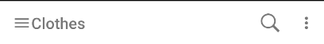

En el apartado list nos encontramos con una lista de las prendas de la aplicación. En este apartado podemos o bien, elegir una de las prendas para verla con mas detalle. O bien, podemos elegir la opción de añadir para añadir una nueva prenda a nuestra aplicación.
Como podemos ver en el toolbar de la aplicación también nos encontramos con la opción de búsqueda, la cuál nos llevará a la actividad Search. Y también el menu d eopciones en el que podremos ver esta ayuda junto con el Acerca de de la aplicación.